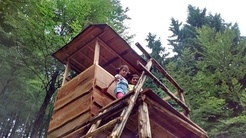
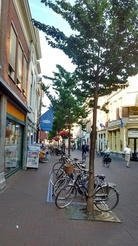
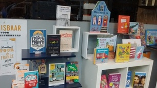

تعطیلات در آلمان-پانزده جولای دوهزار و پانزده
2015-07-15 20:14

آلمان کشوری است منظم، زیبا و ارزان برای تعطیلات تابستان. تعطیلات برای من یعنی پیادهروی در جنگل، کباب و کتاب. کتابش کمی کم بود ولی خوش گذشت. شاید کمی کوتاه بود. آیدا با دوستانش رفته بالای یکی از کلبههای چوبی که فکر کنم برای این آدمهای پرحوصلهایست که به تماشای پرندگان میروند. بطالت مصنوعی.
پیادهروی در دلفت-ده جولای دوهزار و پانزده
2015-07-10 20:14

دو تا از کافههای محبوب دلفت. کافه پشتی، کوبوس-کخ به خاطر کیکهای سیبش مشهور است. اعتراف میکنم که هیچ وقت داخلش را ندیدهام. اهل کافه نیستم. چند سال قبل که تصادف کرده بودم راننده مقصر دعوتم کرد به یکی از کافههای همین نزدیکی و یک کاپوچینو هم مهمانم کرد. پنجاه یورو هم داد بابت هزینه تعمیر دوچرخه. از زیبایی دخترهای ایرانی هم تعریف کرد.

این خیابان کوچک را دوست دارم. کتابفروشی سمت راست، چهارقدم جلوتر نانوایی فرانسوی و آخر خیابان هم سوپرمارکت. بینشان هم کلی فروشگاههای کوچک و بزرگ. همیشه هم شلوغ است. خیابانش حال خوشی دارد.
پیادهروی در دلفت-نه جولای دوهزار و پانزده
2015-07-09 20:14

همچنان همان سیستم اخلاقی یا شاید بیاخلاقی خودم را درباره کتابها دارم. کتاب را دانلود میکنم، میخوانم و اگر خوشم آمد میخرم. اینجا کتابفروشی مورد علاقهام است. جمعهها تا دیروقت باز است و در راه برگشت به خانه سری هم به اینجا میزنم. گردش میان کتابها حال خوشی به آدم میدهد. آخرین کتابهایی که خریدم یک کتاب جنایی بود از استفن کینگ و یک کتاب که هنوز نخواندهام از دیوید میتچل، نویسنده محبوبم. این یکی را نخوانده خریدم چون نویسندهاش را دوست دارم. خیلی انسانی مینویسد.